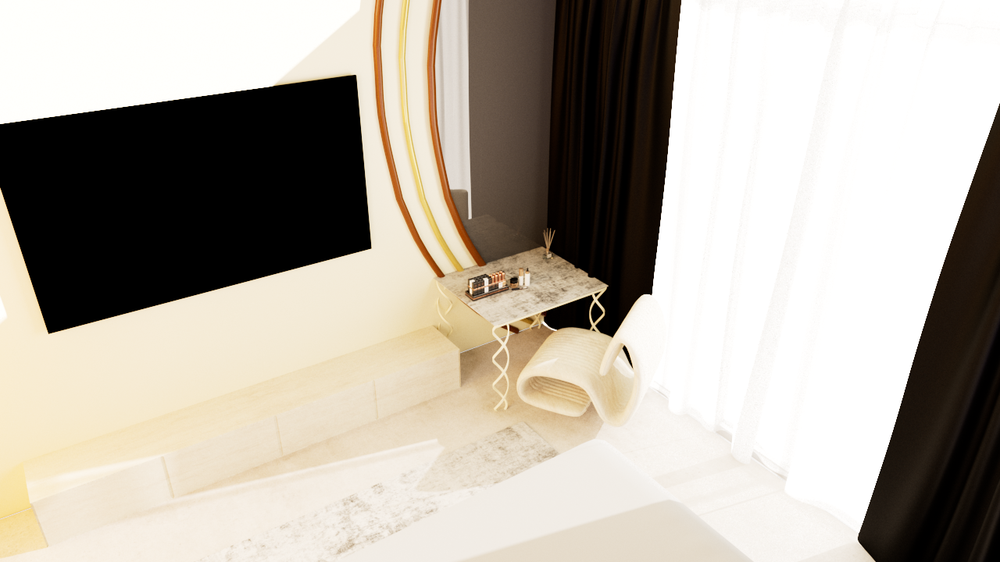

INTERIOR DESIGN · NOIDA, INDIA
Spaces with
quiet character.
Nandini Khandelwal creates warm, considered interiors shaped by light, material and the rituals of everyday life.
Explore the project ↗Portfolio

INTERIOR DESIGNER · URBAN PLANNING BACKGROUND
Designing with
a wider lens.
With a foundation in Urban Planning and a Post Graduate Diploma in Interior Design, Nandini works across spatial planning, technical development and visual storytelling.
Her approach is thoughtful, tactile and practical — balancing a strong point of view with the way people actually live.
Download resume ↓ACADEMIC PROJECT · COMPLETE 3D MODEL
2 BHK
Residential Home
A college-assigned residential concept exploring proportion, material direction, lighting and detailed 3D modelling. This is an academic project, not a built celebrity residence.
Rendered study

Guest bedroom visual study · rendered reference
Technical drawings
From plan to atmosphere.
Selected AutoCAD drawings document the planning and elevation studies behind the residence. Open any drawing to view or download the original PDF.


From first line
to last detail.
Residential interiors
Homes, apartments and villas
Space planning
Flow, proportion and purpose
3D visualisation
Models, views and presentations
Material direction
Stone, timber, textile and colour
Have a space
in mind?
Available for interior design opportunities, collaborations and residential projects.
nknandinik10@gmail.com ↗+91 8979933462 ↗